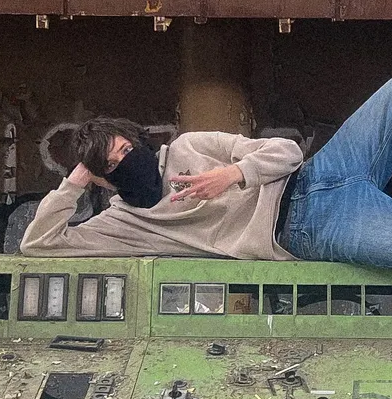
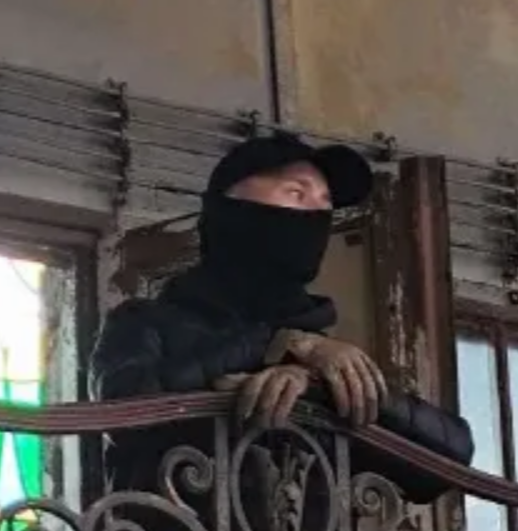
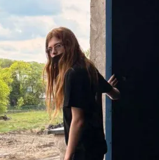

Zarząd Klubu
Poznaj osoby, które tworzą Klub Przyjaciół EC2

iDraws
Urbexiarz · Fotograf
iDraws to założyciel Klubu Przyjaciół EC-2, zajmuje się archiwizacją, tworzeniem postów na stronie Facebookowej, oraz fotografią. Jest on jednym z najbardziej rozpoznawalnych Łódzkich urbexiarzy.
od 2026

Gmis54 Urbex
Urbexiarz · Fotograf
Gmis54 to Łódzki urbexiarz i fotograf, który od 2021 roku dokumentuje opuszczone i zapomniane miejsca.
od 2026

>gabriel(is_dead_now)
Programista · Wspinacz · Urbexiarz · Fotograf
Gabriel jest urbexiarzem i wspinaczem, który stworzył tą stronę. Zajmuje się archiwizacją. Jest członkiem-założycielem grupy urbexowej GUALA.
od 2026